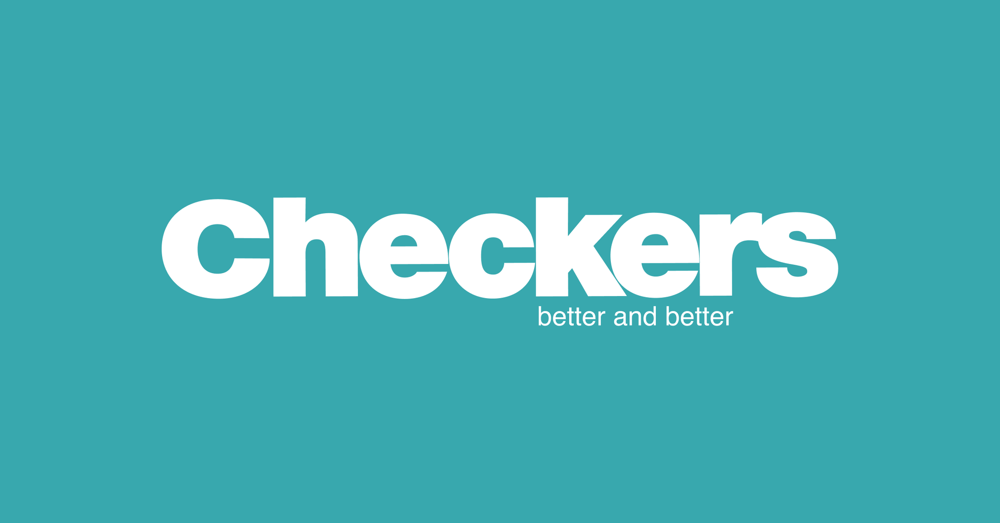
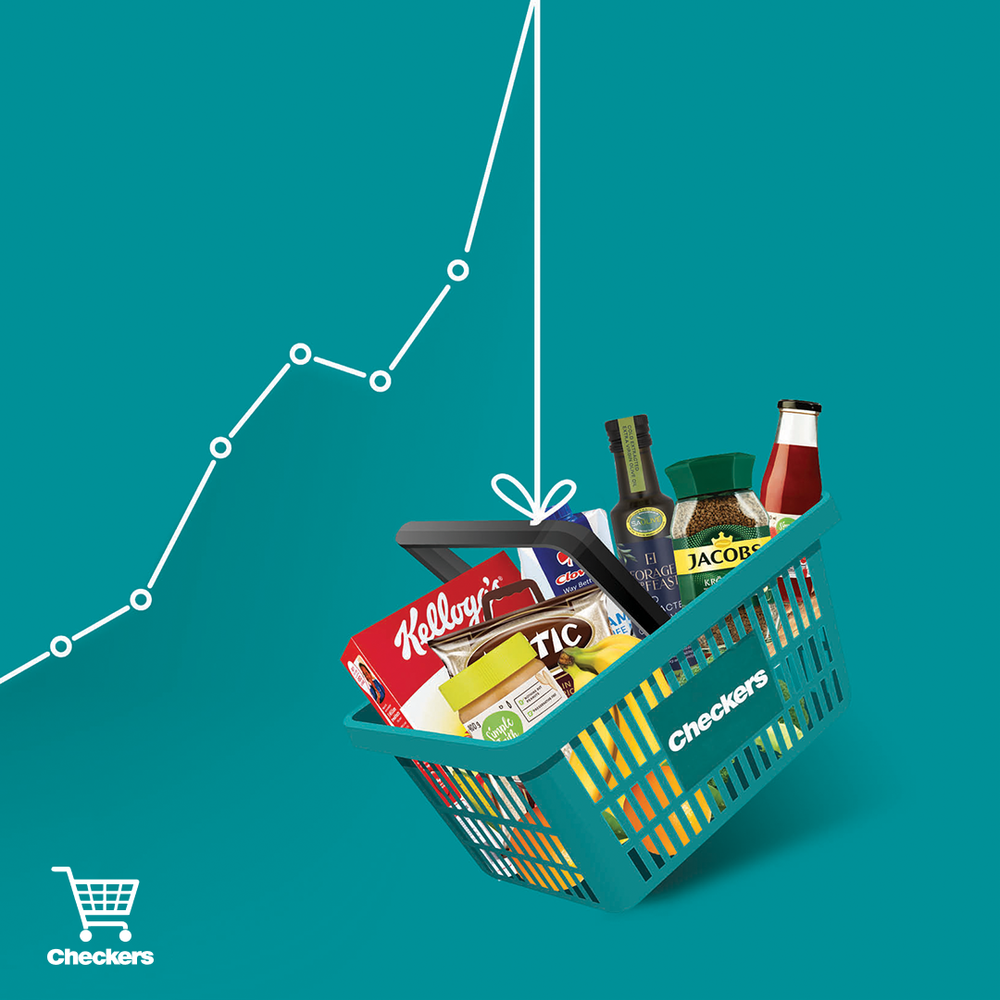
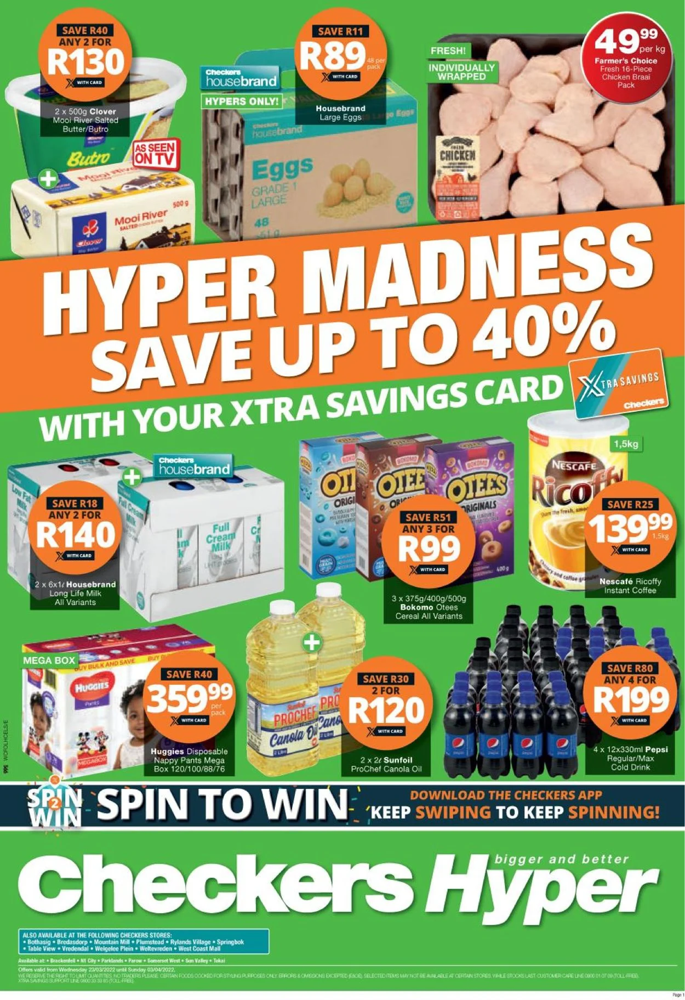

CHECKERS
Checkers is a FMCG retailer owned by Shoprite that operates in Southern Africa. Checkers currently has 37 Checkers Hypers and 202 Checkers supermarkets operating in Botswana, South Africa and Namibia. The supermarket chain focuses more strongly on fresh produce and offers a wider range of choice food items to a more affluent clientele (LSM 8-10). Norman Herber, the chair of Greatermans department stores, was the founder of Checkers.
 Location
A1,First Floor,Entrance 6
Operating Hours
Monday - Friday :09:00 - 18:00
Saturday: 09:00 - 16:00
Sunday: 09:00 - 14:00
Public Holidays: 09:00 - 14:00
Telephone Number
012 345 6789